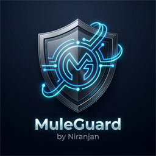

MuleGuard: Enterprise MuleSoft Code Review, Security Guardrails & DataWeave Intelligence
MuleGuard is an all-in-one quality and security workbench designed specifically for MuleSoft Mule 4 applications. It catches hardcoded secrets, worker thread exhaustion, streaming memory leaks, missing error handlers, and anti-patterns before your code reaches CloudHub or Anypoint Exchange.
Choose Your Development Environment
MuleGuard for VS Code & Anypoint Code Builder (ACB)
Built natively for VS Code and MuleSoft's official next-gen IDE, Anypoint Code Builder.
- Real-Time Red/Yellow Squiggles with 1-click Quick Fixes (Ctrl+.).
- Interactive Flow Visualizer (Ctrl+Shift+V) with clickable connector inspector.
- Architect-Grade DataWeave Hover with $O(N^2)$ loop warnings and streaming advice.
- Mule Project Explorer grouping Flows, DWL files, MUnits, and deduplicated YAML configs.
- 7-Step Code Review Engine generating complete Markdown audit checklists.
MuleGuard Maven Plugin for Studio 7.x & CI/CD
Published on Maven Central (`io.github.niranjanpotter`). Zero installation required on developer laptops.
- Native to Anypoint Studio: Runs automatically on Run As ➔ Maven test or
mvn muleguard:check. - Automated Quality Gates: Enforce
<failOnError>true</failOnError>and<minScore>80</minScore>in CI/CD. - ANSI Colored Terminal Table: Clean summary of findings right in Studio's Console tab.
- Interactive HTML Report: Beautiful visual dashboard generated in
target/muleguard-report.html. - SonarQube & Jenkins Ready: Machine-readable
target/muleguard-report.jsonexport.
Step-by-Step Setup Guides
Running MuleGuard Inside Anypoint Studio 7.x
Because every Anypoint Studio project is a standard Apache Maven project, you can integrate MuleGuard in 60 seconds without installing any Eclipse plugins.
Step 1: Add to your Mule project's pom.xml
Paste this plugin definition inside the <build><plugins> block:
<plugin>
<groupId>io.github.niranjanpotter</groupId>
<artifactId>muleguard-maven-plugin</artifactId>
<version>1.0.3</version>
<executions>
<execution>
<goals>
<goal>check</goal>
</goals>
</execution>
</executions>
<configuration>
<!-- Minimum quality score required out of 100 -->
<minScore>75</minScore>
<!-- Fail build if critical security flaws found (default: false) -->
<failOnError>false</failOnError>
</configuration>
</plugin>Step 2: Run in Anypoint Studio
- Method A (Automatic on Test): Right-click your project in Studio ➔ Run As ➔ Maven test.
- Method B (Standalone Goal): Right-click project ➔ Run As ➔ Maven build... ➔ Goals:
muleguard:check➔ Run. - Method C (Terminal): In Studio's built-in terminal, run:
mvn muleguard:check.
Step 3: Inspect the Output
MuleGuard displays findings directly in Anypoint Studio's native Console:
[INFO] Scanning MuleSoft project at: src/main/mule
[INFO] ------------------------------------------------------------------------
[INFO] [MuleGuard] MuleSoft Code Review & Architecture Quality Audit
[INFO] ------------------------------------------------------------------------
[WARNING] [CRITICAL] S-01 | src/main/mule/orders.xml:28 | Cleartext password found: "Ad***5"
[INFO] Recommendation: Move credentials into secure.yaml (${secure::password}).
[WARNING] [HIGH] MG002 | src/main/mule/orders.xml:45 | Missing error-handler in 'create-order-flow'
[INFO] Recommendation: Add an <error-handler> block to ensure structured errors.
[WARNING] [HIGH] BP-04 | src/main/mule/global.xml:18 | Missing responseTimeout on HTTP Request
[INFO] Recommendation: Configure responseTimeout to prevent worker thread exhaustion.
[INFO] ------------------------------------------------------------------------
[INFO] Audit Summary: 3 Finding(s) [Critical: 1, High: 2, Medium: 0, Low: 0]
[INFO] Quality Score: 77/100 (Grade: C, Min Required: 75)
[INFO] Interactive HTML report saved to: target/muleguard-report.html
[INFO] ------------------------------------------------------------------------
Open target/muleguard-report.html in any web browser to explore the full interactive dashboard!
Using MuleGuard in VS Code & Anypoint Code Builder
Step 1: Install the Extension
Search for "MuleGuard" in the VS Code Extensions pane (Ctrl+Shift+X), or run:
code --install-extension niranjanpotter.muleguardStep 2: Key Capabilities & Shortcuts
💡 DataWeave Hover Explainer
Hover over any function (map, filter, reduce, sizeOf) or context variable (payload, vars, attributes) in .dwl or XML files for instant logic breakdowns and architect performance advice.
🔄 Interactive Flow Visualizer
Press Ctrl+Shift+V to render live SVG architecture diagrams. Click any connector to inspect its XML attributes, threading model, and payload contracts.
📋 7-Step Code Review Engine
Press Ctrl+Shift+P ➔ MuleGuard: Run Full 7-Step Code Review to generate an executive Markdown audit report (code-review-report.md) across all 45 checklist criteria.
Enforcing CI/CD Quality Gates
Prevent unencrypted passwords and unstable flows from ever deploying to CloudHub by making MuleGuard a mandatory quality gate in your build pipelines.
Azure DevOps Pipeline (azure-pipelines.yml)
- task: Maven@3
displayName: 'MuleGuard Code Review Quality Gate'
inputs:
mavenPomFile: 'pom.xml'
goals: 'muleguard:check'
options: '-Dmuleguard.failOnError=true -Dmuleguard.minScore=80'
continueOnError: falseGitHub Actions (.github/workflows/mule-review.yml)
name: MuleGuard Quality Gate
on: [push, pull_request]
jobs:
audit:
runs-on: ubuntu-latest
steps:
- uses: actions/checkout@v4
- name: Set up JDK 11
uses: actions/setup-java@v4
with:
java-version: '11'
distribution: 'temurin'
- name: Run MuleGuard Static Analysis
run: mvn io.github.niranjanpotter:muleguard-maven-plugin:1.0.3:check -Dmuleguard.failOnError=true -Dmuleguard.minScore=80Key Rules Enforced by MuleGuard
| Rule ID | Category | Severity | What MuleGuard Checks & Enforces |
|---|---|---|---|
S-01 |
Security | CRITICAL | Detects cleartext passwords, clientSecret, and private keys hardcoded in connector XML attributes. |
S-02 |
Security | HIGH | Flags HTTP listeners lacking TLS/HTTPS contexts on public inbound ports. |
S-05 |
Security | CRITICAL | Detects unencrypted sensitive properties in environment YAML files (requires ![encrypted]). |
MG002 |
Reliability | HIGH | Flags Mule flows missing an inline <error-handler> or global reference. |
MG003 |
Observability | MEDIUM | Ensures flows contain entry/exit loggers with correlationId for distributed tracing. |
MG008 |
Performance | MEDIUM | Warns on hardcoded level="DEBUG" or "TRACE" loggers that cause CloudHub I/O bottlenecks. |
BP-03 |
Resilience | HIGH | Ensures outbound HTTP, DB, and JMS connectors define standard reconnection retry strategies. |
BP-04 |
Performance | HIGH | Flags HTTP Request configs missing responseTimeout, preventing worker thread exhaustion. |
DW-01 |
DataWeave | HIGH | Alerts on sizeOf(payload) on streaming payloads that cause OutOfMemoryError. |
Common Questions
Q: Does MuleGuard upload any code or data to external servers?
No, never. MuleGuard is 100% offline and air-gapped safe. Both the VS Code extension and the Maven plugin perform pure in-memory static analysis. Zero code, tokens, or configuration ever leave your computer.
Q: How is MuleGuard different from SonarQube?
Standard SonarQube lacks deep awareness of Mule 4 XML schemas, DataWeave 2.0 streaming contracts, and connector threading pools. MuleGuard is purpose-built by a MuleSoft Architect with 36+ Mule-specific guardrails.
Q: Can I use it in Anypoint Studio 7.x without VS Code?
Yes! By adding the muleguard-maven-plugin to your pom.xml, you can run automated code reviews directly inside Anypoint Studio via Run As ➔ Maven test.
"I built MuleGuard because I spent years in enterprise code reviews pointing out the exact same avoidable flaws: hardcoded database passwords, unhandled errors, missing HTTP timeouts that brought down worker nodes, and streaming DataWeave scripts that crashed under load. MuleGuard automate these guardrails so developers can ship bulletproof integrations with confidence."
— Niranjan Kumar Potter
MuleSoft Architect • Kota, Rajasthan • Creator of Enterprise Integration Hub & MuleGuard